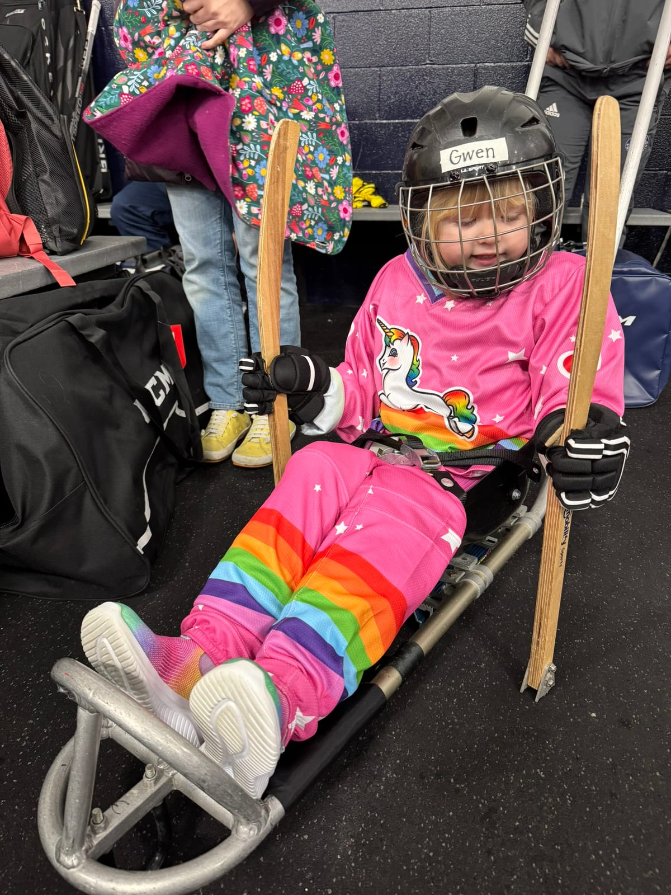
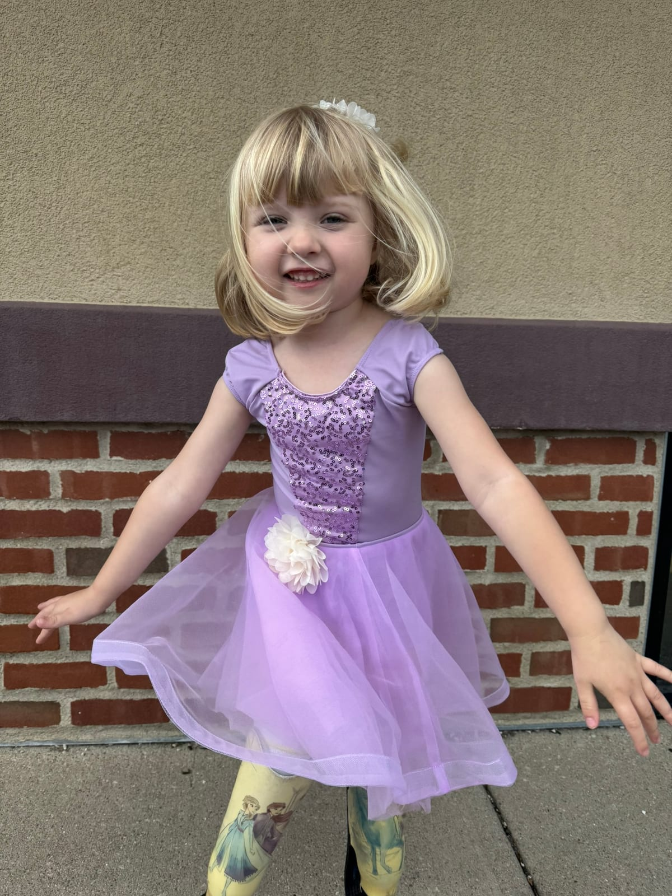
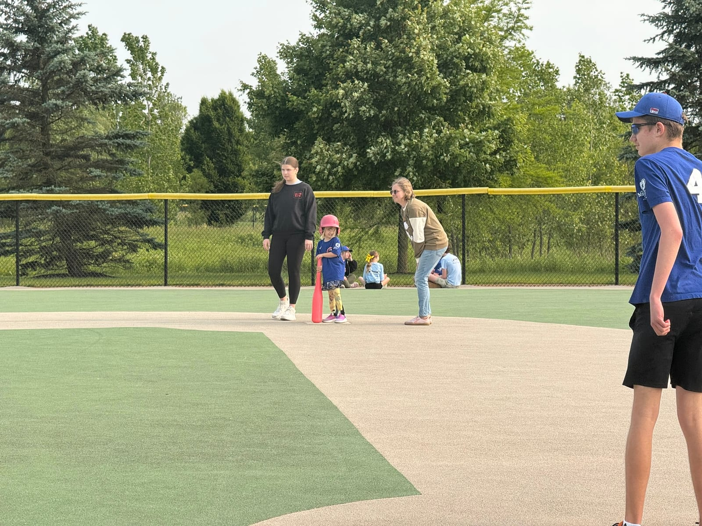
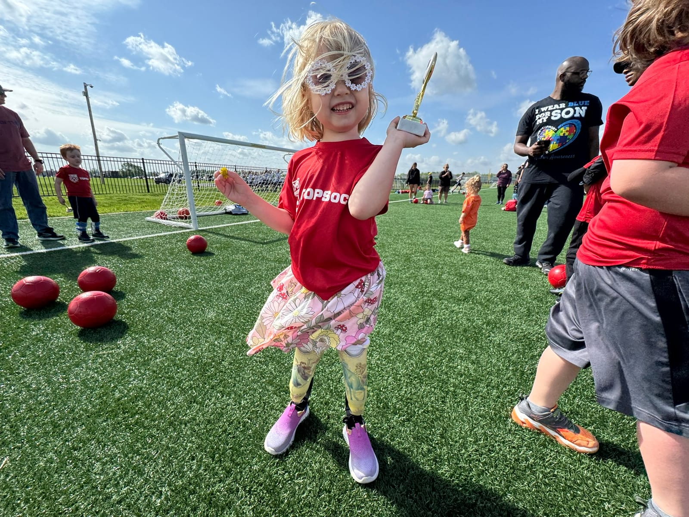
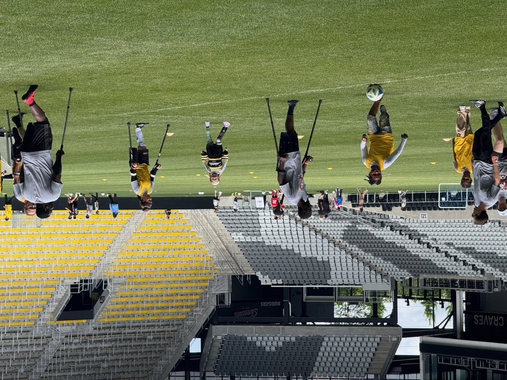
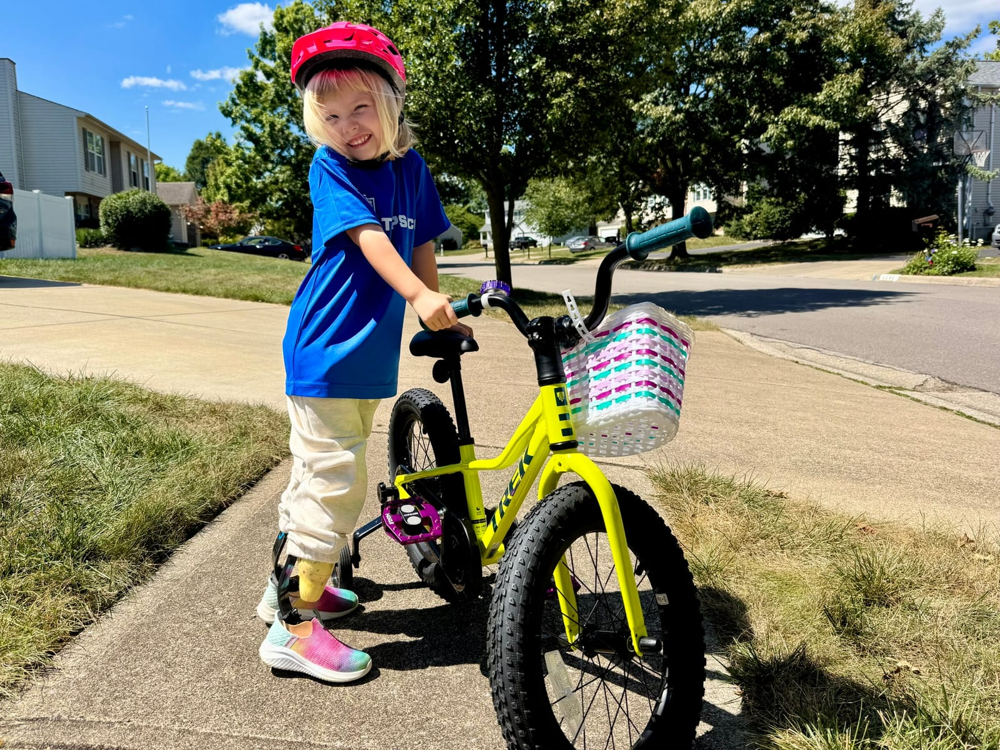
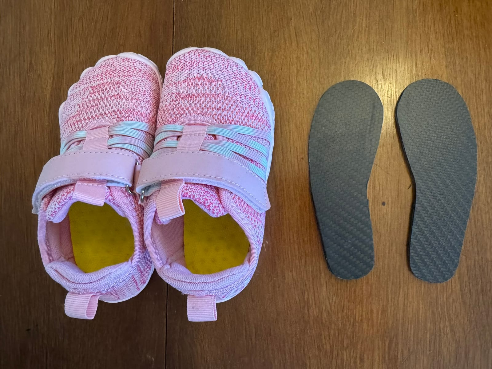
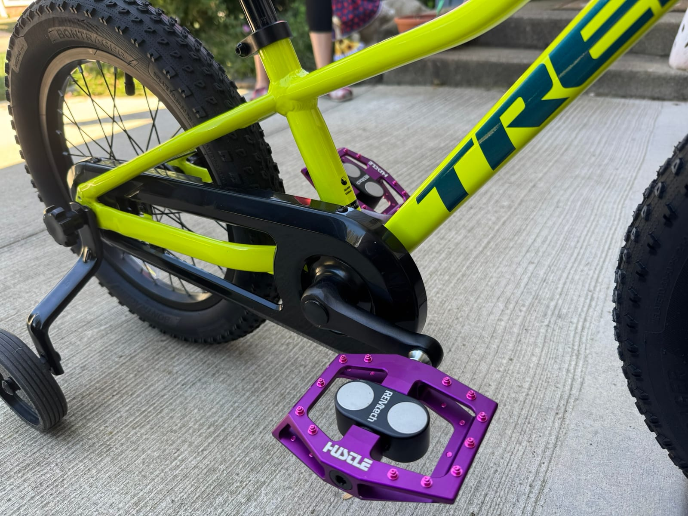
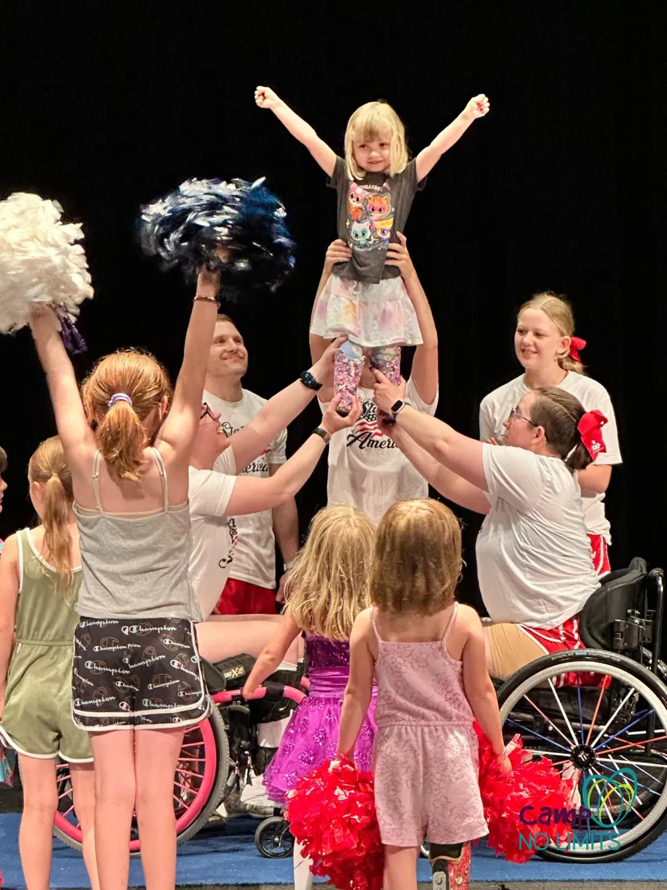

Columbus Knights Wheelchair Basketball
We have not tried the Knights with Gwen yet, but we know several families whose children participate and really enjoy it. The youth team practices at the Espy Adaptive Sports Complex.
Basketball detailsWe started this page with the sports and activities Gwen has tried, then added other adaptive programs around Central Ohio that families may want to explore. The first section is our experience. Farther down the page, the programs are grouped by organization, age, and the community they are designed to serve.
Gwen joined Columbus Blades Sled Hockey last year at just three years old. We're told some kids even start earlier. It's a supportive and encouraging group, and Gwen absolutely loves it.
When the season began, she could barely move her sled on the ice. By the end, she was cruising around the rink confidently. Beyond just being fun, we believe sled hockey is helping build her upper body and core strength in a natural, engaging way.

Gwen is getting ready for sled hockey practice.
Gwen participates in the Chance to Dance program at Easterseals, but it’s open to any child with a disability. The program is run by an instructor who works with children of all abilities and mobility levels, offering joyful and expressive movement classes.
Gwen loves her dance class. It’s not only fun and creative, but it also helps with balance, coordination, and confidence. It’s a welcoming, inclusive environment that celebrates every child's unique ability to move.

Chance to Dance Spring Recital
Gwen recently started playing baseball with The Miracle League of Central Ohio. The adaptive field is flat and smooth, which makes a big difference for Gwen. Not having curbs or grass to trip on means she can focus on having fun.
The group has been a great experience so far, and Gwen is having a lot of fun. The Miracle League gives children of all abilities the chance to enjoy baseball in an environment designed for them.

Gwen running bases at The Mircale League.
We’ve also enrolled Gwen in TOPSoccer, a community-based soccer program designed for kids with disabilities. We tried other mainstream soccer programs before, but uneven ground and tall grass were big challenges for Gwen.
At TOPSoccer, she plays on a smooth, accessible field with other children who face similar challenges. It’s a much more fun and comfortable experience for her. The volunteers and coaches are supportive, and the program is focused on inclusion and development. You can explore more programs around the state through Ohio Soccer's TOPSoccer directory.

Last day of spring TOPSoccer
We have been taking Gwen to practices with GOAT Soccer, which stands for Greater Ohio Amputee Soccer Team. The team is part of the American Amputee Soccer Association's regional network and brings together amputee players from around Ohio.
The team has welcomed Gwen onto the field and invites her to join parts of practice, where she works on soccer skills alongside the adult players. She loves running around the field and spending time talking with everyone. For us, the best part has been the community. It gives Gwen a chance to meet, learn from, and build relationships with other amputees.
In amputee soccer, field players with lower-limb differences play on forearm crutches without prostheses, while goalkeepers have upper-limb differences. Families can learn more about the sport, youth programs, and regional teams through the American Amputee Soccer Association.

Gwen practices soccer skills alongside players from GOAT Soccer.
When Gwen first started riding her bike, she had a hard time keeping her feet on the pedals. I went to a local cycle shop and asked if we could try a pair of cage pedals, which helped a lot. She was able to ride pretty well, but getting her feet set on the pedals and stepping off the bike was still tricky.
At Camp No Limits, we met an amputee who told us about the magnetic pedals made by Hustle Bike Labs. I thought that was such a great idea. These pedals are designed for adults who use cycling shoes with a metal plate attached where a clip-in pedal would normally go. Before buying a pair, I reached out to Hustle to ask if they thought the magnets would be strong enough to work through a child’s shoe if we added a small piece of metal inside.
Hustle was incredibly kind; they went out of their way to test the idea and even mailed us custom magnetic shoe inserts and pedals for Gwen to try. The magnets don’t hold her feet rigidly in place, but she can feel them pull her prosthetic feet toward the pedals, which makes it much easier for her to keep her footing while she rides. If she starts to lose balance, she can still lift her feet off quickly to steady herself.
It’s been such a great solution for her, much better than the cages. We’re so thankful to Hustle for taking the time to help make this work for Gwen, and we're excited to recommend them to others.



Gwen participated in a ParaCheer Spirit Organization event with an inclusive team of athletes and coaches. ParaCheer helps make sideline and competitive cheer more accessible for athletes with physical and neurological disabilities.

Gwen participates in a ParaCheer event, lifted by an inclusive team of athletes and coaches.
Columbus Recreation and Parks offers a much larger adaptive sports program than we realized. The city lists the programs below individually, provides coaching and equipment, and says participation in its adaptive sports programs is free.
We have not tried the Knights with Gwen yet, but we know several families whose children participate and really enjoy it. The youth team practices at the Espy Adaptive Sports Complex.
Basketball detailsAdaptive Aquatics includes adapted swim lessons, adult aquatic fitness, and a swim club for swimmers who are ready to work toward para-swimming competition.
Aquatics detailsBoccia is a Paralympic target sport designed for athletes with significant physical disabilities. Columbus offers practices and hosts the Jack Attack regional tournament.
Boccia detailsThe city's year-round athletics program supports wheelchair and ambulatory athletes in track, field events, and road racing, with access to specialized equipment and coaching.
Track and racing detailsColumbus offers wheelchair tennis throughout the year, with outdoor play at Wolfe Park and indoor locations that can change by season.
Tennis detailsThe Buckeye Blitz practice at the Espy Adaptive Sports Complex and compete in wheelchair rugby events, including the regional Columbus Collision tournament.
Rugby detailsThe Pioneers play wheelchair softball during the warmer months and offer a competitive next step for athletes interested in a diamond sport.
Softball detailsColumbus Ice Hockey Club and the city partner on developmental and competitive blind hockey. Players use an audible puck and sport-specific visual classifications.
Blind hockey detailsAdaptive Sports Connection serves Central Ohio with adaptive outdoor recreation. Instead of leaving it as one general listing, these are the main programs families may want to look for.
Bikes to Go helps children and adults try adjustable cycles and accessories, find the right setup, and learn about equipment options. Discover Cycling adds assessments, fittings, and group rides.
Cycling detailsAdaptive paddling programs help participants get on the water with instruction, adapted seating, and support chosen for their mobility and comfort level.
Paddling programsWinter programs include stand-up skiing, sit-skiing, and snowboarding instruction at Snow Trails and Mad River Mountain.
Snow sports detailsOperation Fairway is an adaptive golf program connected with the Columbus VA. It supports veterans with visual impairments and other disabilities as they learn or return to golf.
Operation Fairway detailsWesterville offers changing seasonal activities for people with physical, developmental, and invisible disabilities. Programs have included wheelchair basketball open gyms, sensory-friendly events, and inclusive community gatherings.
Westerville programsGrove City offers seasonal sports, fitness, and recreation for children, adults, and veterans who may need adapted equipment, instruction, or additional support.
Grove City programsUpper Arlington's recreation options can include inclusive camps, pool activities, small-group therapeutic programs, and adaptive sports at the Bob Crane Community Center and other city facilities.
Upper Arlington programsAdaptive dance classes use music, props, and accessible movement to build coordination, confidence, and creative expression. No previous dance experience is required.
Adaptive dance detailsAdaptive Ascents in Westerville uses customized climbing equipment and techniques so participants can climb while standing, seated, or assisted.
Adaptive climbing detailsCentral Ohio also has several programs that use horses to support movement, confidence, communication, and connection.
Stockhands offers therapeutic services and creative equine programs, including opportunities that combine reading and time with horses.
Stockhands detailsDreams on Horseback provides therapeutic riding, equine-assisted learning, field trips, and other programs for different ages and needs.
Dreams on Horseback detailsDiscovery Riders welcomes riders of different ages and abilities for equine-assisted activities, summer camps, and Special Olympics participation.
Discovery Riders detailsFlying Horse Farms is a medical specialty camp for children with serious illnesses. Horses are part of a larger camp experience provided at no cost to families.
Flying Horse Farms detailsWillow Ridge is a nonprofit that has provided equine-assisted therapy for children with physical or emotional needs since 2003.
Willow Ridge detailsSome local adaptive sports are designed mainly for older participants. They are still helpful to know about early, especially for families looking for activities that can continue into adulthood.
The Greater Columbus Rowing Association uses adapted coaching, rowing machines, equipment, and single or double shells to help adults with disabilities row indoors and on the water.
Adaptive rowing detailsFore Hope offers individual and group golf for people living with stroke, Parkinson's disease, multiple sclerosis, traumatic brain injury, and other neurological, cognitive, or physical challenges.
Fore Hope detailsThese programs have more specific eligibility. We included them because they may be exactly what another family is trying to find.
CP Soccer provides a local team and sport pathway specifically for ambulatory children and teens within the CP, stroke, and TBI classifications.
CP Soccer ColumbusSchool athletics include goalball, swimming, track and field, wrestling, cheerleading, and other activities for students with visual impairments.
OSSB athleticsSpecial Olympics programs are managed locally, so registration, eligibility, and available sports depend on where a family lives or attends school.
A year-round program for eligible Franklin County athletes with developmental disabilities. Sports can include swimming, basketball, bocce, tennis, track, skiing, and team sports.
Franklin County programColumbus City Schools coordinates sports such as track, bowling, bocce, gymnastics, tennis, volleyball, golf, softball, soccer, swimming, and basketball for eligible students.
Columbus Schools programWorthington offers free, year-round athletics for residents with intellectual disabilities, including aquatics, track, basketball, bowling, powerlifting, soccer, and gymnastics when available.
Worthington programThe Delaware Racers provide year-round training, competition, and social connection for athletes in Delaware County and nearby communities.
Delaware County programThe West Licking Warriors serve Pataskala and western Licking County with basketball, bowling, cheer, track and field, bocce, tennis, and social activities.
West Licking programNationwide Children’s Hospital offers a specialized Adaptive Sports Medicine Program designed to help athletes with disabilities reach their full potential. Their team supports performance, injury prevention, and physical development.
Adaptive Sports Ohio is a statewide 501(c)(3) nonprofit dedicated to removing barriers so people with physical disabilities can play sports. They offer community-based and interscholastic programs across Ohio including sled hockey, wheelchair basketball, power soccer, handcycling, track & field, and more. Adaptive equipment is provided, and their staff helps match you with a program that fits your needs.
Whether your family is new to adaptive sports or experienced, Adaptive Sports Ohio has year-round opportunities, from clinics and recreational programs to competitive teams and camps. They also support schools by loaning equipment and helping launch adaptive sports teams for students.
Programs are held in counties like Wayne, Cuyahoga, Mahoning, and Lucas. If your community isn’t listed yet, you can still reach out to ask about new programming. Adaptive Sports Ohio also hosts events like the Junior Wheelchair Basketball State Championship, sled hockey charity games, and wrestling clinics.
Move United maintains a searchable list of adaptive sports organizations across Ohio. The listings include local chapters and programs offering everything from basketball and archery to water skiing and snowboarding. You can filter by city or sport to find opportunities near you.
It’s a helpful resource if you’re looking to explore different adaptive programs and want to see what’s available statewide. Each listing includes contact details and a brief description to help you get started.
The Adapted Sports Institute at The Ohio State University is part of their physical therapy and rehabilitation program. They work with individuals of all ages and abilities, helping them get involved in competitive or recreational sports after injury, illness, or diagnosis.
In addition to rehabilitation, they support athletes through training, coaching, and medical care. Programs are often coordinated with physical therapists and sports medicine specialists, which makes it a great fit for those needing personalized support.
Team USA’s club directory lists Paralympic and adaptive sports programs located throughout Ohio. This includes both grassroots and competitive-level opportunities in a wide variety of sports.
Whether you're just starting out or looking for advanced coaching, this is a good place to discover official Team USA-affiliated clubs and learn what’s offered in your area.